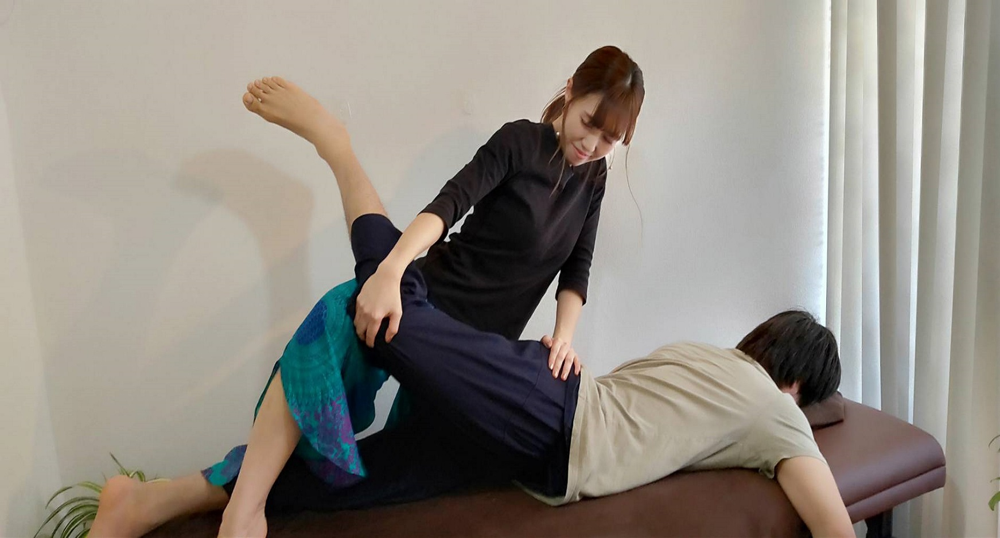
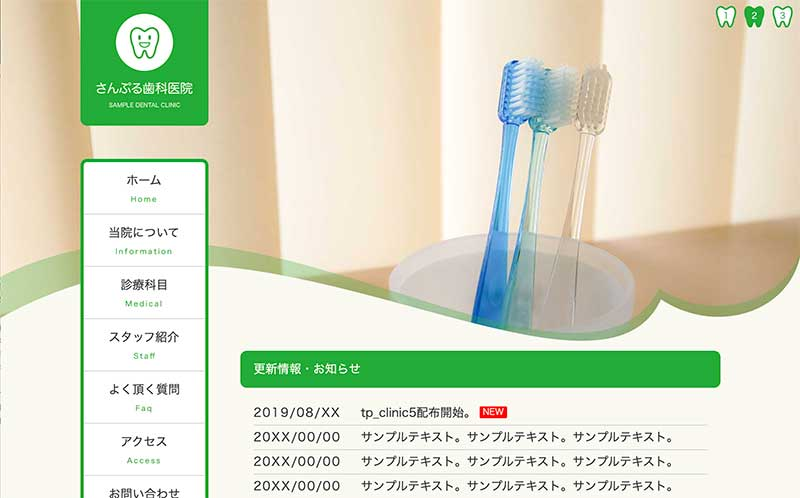
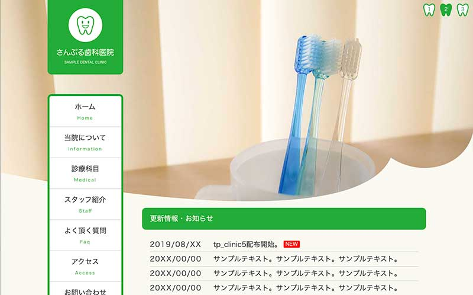
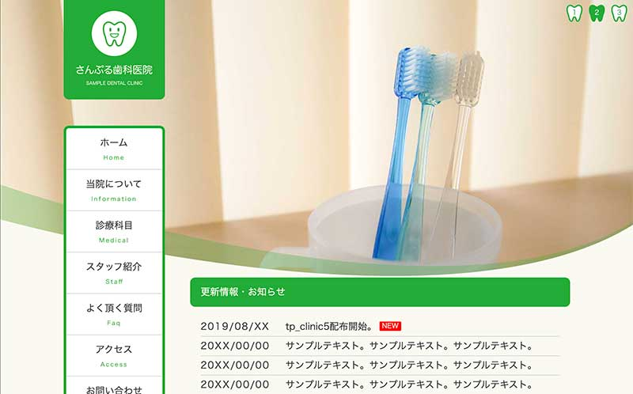
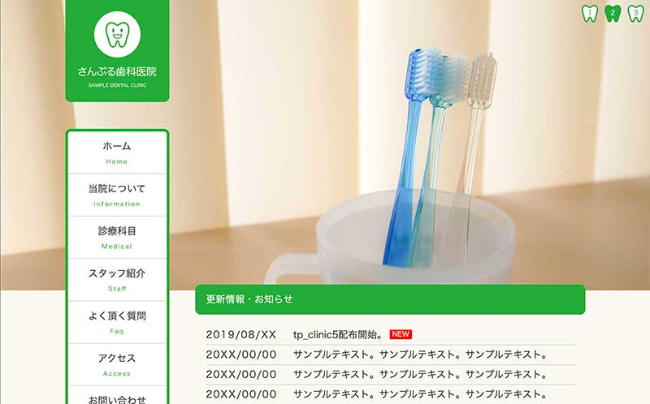

当院について
当院について
何も指定しない場合は画像幅100%表示です。
ここに説明を入れます。サンプルテキスト。ここに説明を入れます。サンプルテキスト。ここに説明を入れます。サンプルテキスト。ここに説明を入れます。サンプルテキスト。ここに説明を入れます。サンプルテキスト。ここに説明を入れます。サンプルテキスト。ここに説明を入れます。サンプルテキスト。ここに説明を入れます。サンプルテキスト。ここに説明を入れます。サンプルテキスト。
ここに説明を入れます。サンプルテキスト。ここに説明を入れます。
ここに説明を入れます。サンプルテキスト。ここに説明を入れます。
ここに説明を入れます。サンプルテキスト。ここに説明を入れます。
右に回り込み（class="fr w40p"）
imgタグにclass="fr w40p"を指定するとこのように右に回り込みします。画像の幅はcssフォルダのstyle.cssの.w40pのwidthの数字で変更できます。
左に回り込み（class="fl w40p"）
imgタグにclass="fl w40p"を指定するとこのように右に回り込みします。画像の幅はcssフォルダのstyle.cssの.w40pのwidthの数字で変更できます。
このブロックの最初の段落タグにclass="clear"の指定が入っていますが、float（回り込み）を解除する指定です。これがないと前のfloatに巻き込まれますので、レイアウト的に解除したい場合にclearを指定して下さい。
初診の方へ
ここに見出しを入れます。
ここに本文を入れます。サンプルテキスト。ここに本文を入れます。サンプルテキスト。ここに本文を入れます。サンプルテキスト。ここに本文を入れます。サンプルテキスト。ここに本文を入れます。サンプルテキスト。ここに本文を入れます。サンプルテキスト。
ここに見出しを入れます。
ここに本文を入れます。サンプルテキスト。ここに本文を入れます。サンプルテキスト。ここに本文を入れます。サンプルテキスト。ここに本文を入れます。サンプルテキスト。ここに本文を入れます。サンプルテキスト。ここに本文を入れます。サンプルテキスト。
ここに見出しを入れます。
ここに本文を入れます。サンプルテキスト。ここに本文を入れます。サンプルテキスト。ここに本文を入れます。サンプルテキスト。ここに本文を入れます。サンプルテキスト。ここに本文を入れます。サンプルテキスト。ここに本文を入れます。サンプルテキスト。
ここに見出しを入れます。
ここに本文を入れます。サンプルテキスト。ここに本文を入れます。サンプルテキスト。ここに本文を入れます。サンプルテキスト。ここに本文を入れます。サンプルテキスト。ここに本文を入れます。サンプルテキスト。ここに本文を入れます。サンプルテキスト。
院長挨拶
院長挨拶
 院長の挨拶や経歴などをここに入れます。サンプルテキスト。院長の挨拶や経歴などをここに入れます。サンプルテキスト。院長の挨拶や経歴などをここに入れます。サンプルテキスト。院長の挨拶や経歴などをここに入れます。サンプルテキスト。院長の挨拶や経歴などをここに入れます。サンプルテキスト。院長の挨拶や経歴などをここに入れます。サンプルテキスト。
院長の挨拶や経歴などをここに入れます。サンプルテキスト。院長の挨拶や経歴などをここに入れます。サンプルテキスト。院長の挨拶や経歴などをここに入れます。サンプルテキスト。院長の挨拶や経歴などをここに入れます。サンプルテキスト。院長の挨拶や経歴などをここに入れます。サンプルテキスト。院長の挨拶や経歴などをここに入れます。サンプルテキスト。
院長の挨拶や経歴などをここに入れます。サンプルテキスト。院長の挨拶や経歴などをここに入れます。サンプルテキスト。院長の挨拶や経歴などをここに入れます。サンプルテキスト。院長の挨拶や経歴などをここに入れます。サンプルテキスト。院長の挨拶や経歴などをここに入れます。サンプルテキスト。院長の挨拶や経歴などをここに入れます。サンプルテキスト。
院長の挨拶や経歴などをここに入れます。サンプルテキスト。院長の挨拶や経歴などをここに入れます。サンプルテキスト。院長の挨拶や経歴などをここに入れます。サンプルテキスト。院長の挨拶や経歴などをここに入れます。サンプルテキスト。院長の挨拶や経歴などをここに入れます。サンプルテキスト。院長の挨拶や経歴などをここに入れます。サンプルテキスト。
| 見出し | ここに説明など入れて下さい。サンプルテキスト。 |
|---|---|
| 見出し | ここに説明など入れて下さい。サンプルテキスト。 |
| 見出し | ここに説明など入れて下さい。サンプルテキスト。 |
| 見出し | ここに説明など入れて下さい。サンプルテキスト。 |
| 見出し | ここに説明など入れて下さい。サンプルテキスト。 |
| 見出し | ここに説明など入れて下さい。サンプルテキスト。 |
| 見出し | ここに説明など入れて下さい。サンプルテキスト。 |
当テンプレートについて
当テンプレートはレスポンシブWEBデザインです
パソコン、スマホ、タブレットなど、各端末サイズでレイアウトが自動で切り替わります。
古いブラウザで閲覧した場合にCSSの一部が適用されない（角を丸くする加工やグラデーションなどの加工等）のでご注意下さい。
各デバイスごとのレイアウトチェックは
最終的なチェックは実際のタブレットやスマホで行うのがおすすめですが、臨時チェックは最新のブラウザで行う事もできます。ブラウザの幅を狭くしていくと、各端末サイズに合わせたレイアウトになります。
注意：cssはリアルタイムで反映されますが、javascript(js)はブラウザを再読み込みさせないと反映されないので、レイアウトが切り替わったらブラウザを再読み込みさせて下さい。javascriptは小さい端末用の開閉ブロックなどに使われています。
各デバイス用のスタイル変更は
cssフォルダの各cssファイルで行って下さい。詳しい説明も入っています。
メインのスタイルはstyle.cssになります。
前半はパソコン環境を含めた全端末の共通設定になります。中盤以降、各端末向けのスタイルが追加設定されています。
media=" (～)"の「～」部分でcssを切り替えるディスプレイのサイズを設定しています。ここは必要に応じて変更も可能です。
小さい端末（※幅900px以下）の環境でのみ
メインメニューが折りたたみ式（３本バーアイコン化）になります。バーのスタイル設定もstyle.cssで行う事ができます。
画像ベースは
「base」フォルダに入っていますのでご自由にご活用下さい。
写真の元素材を当社運営のPHOTO-CHIPSやDECORUTOで配布している場合もございます。
当テンプレートの使い方
初診者向けマニュアル公開中
画像加工やテンプレートの編集方法、無料サーバーを使ってサイトを公開するなど動画をまじえてわかりやすく解説しています。
初診者向けマニュアルはこちら。
注意：当テンプレートにはメインメニューが「２箇所」入っています
パソコンなどの大きな端末「menubar（幅901px以上）」向けと、タブレットやスマホなどの小さな端末「menubar-s（幅900px以下）」向けがそれぞれ入っています。大きな端末向けは編集ソフトで見れると思いますが、小さな端末向けは見えないと思いますのでhtml側で編集して下さい。
titleタグ、copyright、metaタグ、他の設定
titleタグの設定はとても重要です。念入りにワードを選んで適切に入力しましょう。
まず、htmlソースが見れる状態にして、
<title>病院・歯科医院・整体・整骨院サイト向け 無料ホームページテンプレート tp_clinic5</title>
を編集しましょう。
あなたのホームページ名が「さんぷる歯科医院」だとすれば、
<title>さんぷる歯科医院</title>
とすればＯＫです。SEO対策もするなら冒頭に重要なワードを入れておきましょう。
copyrightを変更しましょう。
続いてhtmlの下の方にある、
Copyright© さんぷる歯科医院 All Rights Reserved.
の部分もあなたのサイト名に変更します。
metaタグを変更しましょう。
htmlソースが見える状態にしてmetaタグを変更しましょう。
ソースの上の方に、
content="ここにサイト説明を入れます"
という部分がありますので、テキストをサイトの説明文に入れ替えます。検索結果の文面に使われる場合もありますので、見た人が来訪したくなるような説明文を簡潔に書きましょう。
続いて、その下の行の
content="キーワード１,キーワード２,～～～"
も設定します。ここはサイトに関係のあるキーワードを入れる箇所です。10個前後ぐらいあれば充分です。キーワード間はカンマ「,」で区切ります。
h1ロゴのaltタグも変更しましょう。
html側に、
alt="さんぷる歯科医院"
となっている箇所があるので、この部分もあなたのサイト名に変更しましょう。
上部のロゴ画像について
文字なしの土台画像がbaseフォルダに入っていますのでそれにサイト名をのせてimagesフォルダに上書きして下さい。画像の大きさは自由に変更してもらっても構いませんがある程度大きくしておいた方が高解像度の端末で鮮明に見えます。
トップページのスライドショーについて
cssフォルダのslide.cssで設定されています。
css3に対応した環境でしか動作しません。
css3に対応していない古い環境（IEなら9以下）から見た場合に最後の画像だけ固定表示されてしまうので、head内に1.jpg（※class="slide0"の行）が表示されるよう指定しています。1.jpg以外を表示させておきたいならこのhead内の画像読み込みのclass指定を変更して下さい。
大きな端末(幅481px以上)向け、小さな端末(幅480px以下)向けと２種類設置されています。
html側の下の方にスライドショータグを置いていますので見てみて下さい。
画像を入れ替えたい場合
大きな端末向けの「1.jpg」「2.jpg」「3.jpg」と、小さな端末向けの「1s.jpg」「2s.jpg」「3s.jpg」を用意してimagesフォルダに上書きして下さい。
大きさはある程度大きければバラバラでも構いませんが、必ず「縦横比」を合わせて下さい。サンプル画像から比率を変更した場合、スライドショーの下の装飾用のpng画像も合わせて調整して下さい。
拡張子が「jpeg」や「JPG」と少し違った場合にうまく表示できない可能性があるので梱包画像の拡張子と合わせて下さい。拡張子を変更したい場合はhtml側を直接変更しても構いません。
画像は容量が軽くなるようにできるだけ圧縮して下さい。容量が大きいと初動がガタつきます。
ループを一回で終了したい場合
cssフォルダのslide.cssの、
@keyframes slide3 {
の、
95% {opacity: 0;}
100% {opacity: 0;}
を、以下に変更。
95% {opacity: 1;}
100% {opacity: 1;}
続いて、
.slide1,.slide2,.slide3 {
の、
animation-iteration-count:infinite;
を以下に変更。
animation-iteration-count:1;
固定画像にしたい場合
cssフォルダのslide.cssを開き、冒頭の
「/*CSSスライドショー設定」
のブロックを削除。
次に、index.htmlから使う画像だけを残してあとは削除。
残した画像タグからclass指定（class="slide1"などの）を外して下さい。
画像を囲っているasideタグなどはレイアウト設定が入っているので削除しないよう注意して下さい。
速度や枚数などの調整
cssフォルダのslide.cssで行って下さい。解説も入っています。
スライドショーに関する詳しい使い方はこちら。
その他
スライドショー画像の右上に現在表示中を示すボタンがついていますが、単に画像にボタンを重ねているだけです。
スライドショーである点をわかりやすくするために入れているだけで、クリックするとその画像が出るというような動作はしません。
トップページのスライドショー下部の切り抜き用装飾パーツのサンプル
スライドショーのhtml側を変更すれば自由にカスタマイズできます。オリジナルで作ってみられるのもGOOD。
↓ダウンロード直後の状態。

↓123_kazari2.pngの使用例

↓123_kazari3.pngの使用例

↓装飾なしタイプ。
装飾用の画像タグ(123_kazari1.pngの１行)をhtml側から削除すれば、スライドショー画像がそのまま適用されます。
mainブロックと少し重なってしまうので、気になる場合はcssフォルダのstyle.cssの.home #mainのmargin-top: 30%;の30の数字をほんの少し大きくするなどで変更してみて下さい。

リストタグを使いたい場合の注意点
そのままではリストマークが出ませんので、リストタグを使う場合は以下のようなスタイルを追加して下さい。
<ul class="disc">
<li>リストタグ</li>
<li>リストタグ</li>
<li>リストタグ</li>
</ul>
↓出力例
- リストタグ
- リストタグ
- リストタグ
- olタグはそのままででます。
- olタグはそのままででます。
- olタグはそのままででます。
- olタグはそのままででます。
スクロール中に出る「↑」アイコンについて
fixmenu_pagetop.jsで動作の制御を、cssフォルダのstyle.css内の
/*PAGE TOP（↑）設定
でボタンデザインを設定しています。
ボタンの出現ポイントは、現在350pxの場所になっています。変更したい場合はfixmenu_pagetop.jsの34行目あたりにある、
offsettop = 350;
の350を変更して下さい。
スマホなどの小さな端末からボタンクリックでPC画面を表示させたい方へ
レスポンシブデザインだと、スマホやタブレットなどの小さな端末から見た場合はそれ専用のレイアウトに変わりますが、あえてPC画面も見せたいユーザーの為にtipsを公開しました。